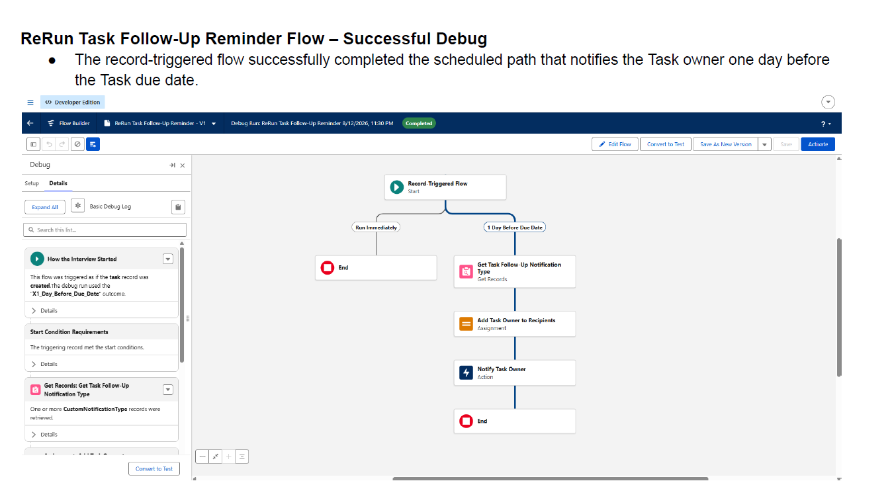
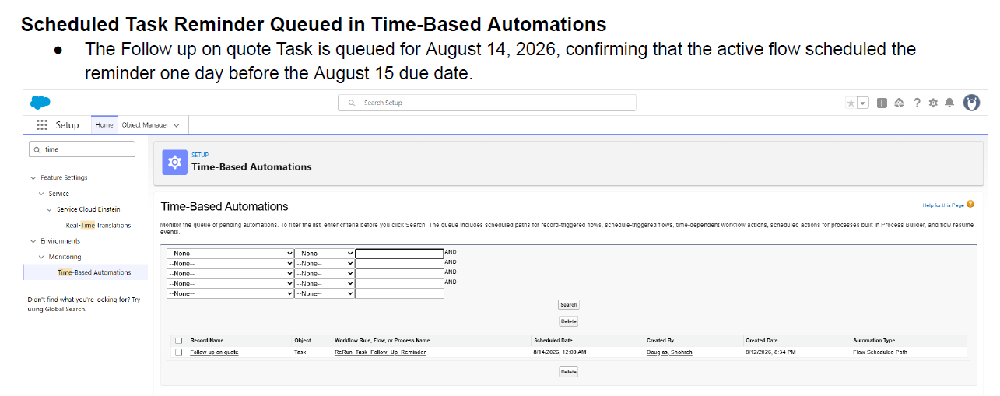
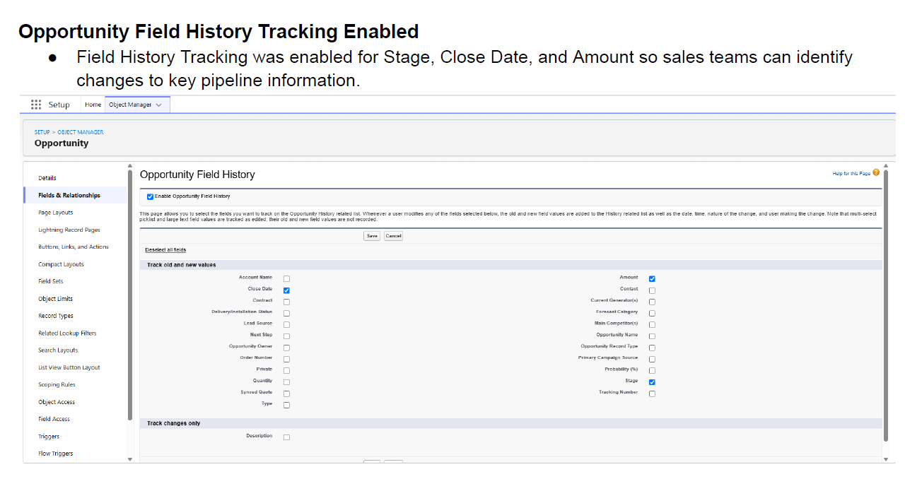
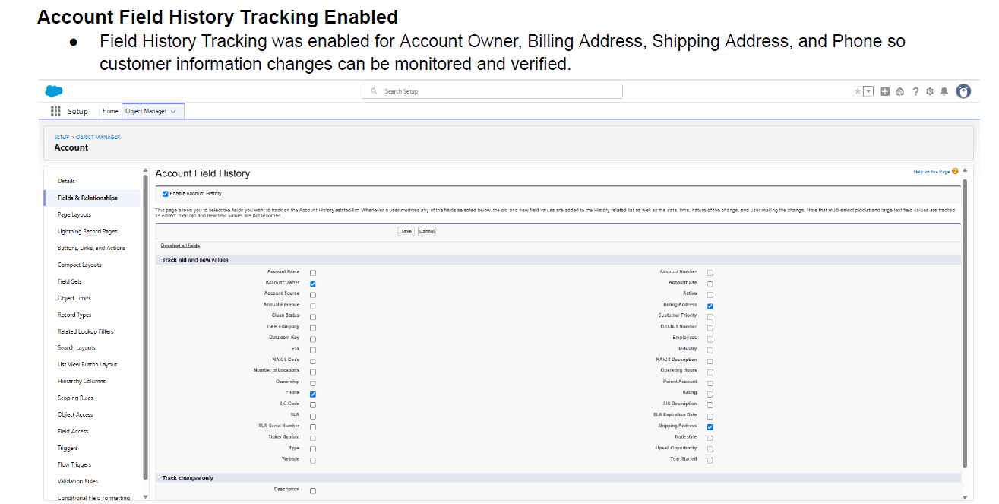
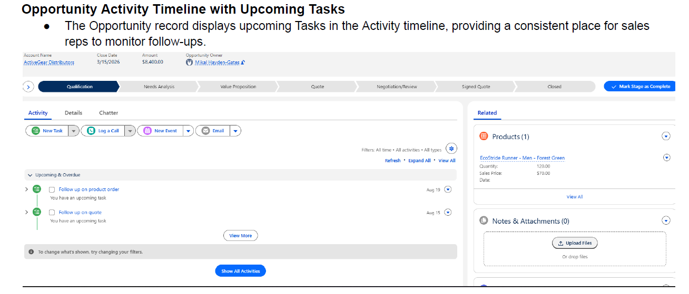
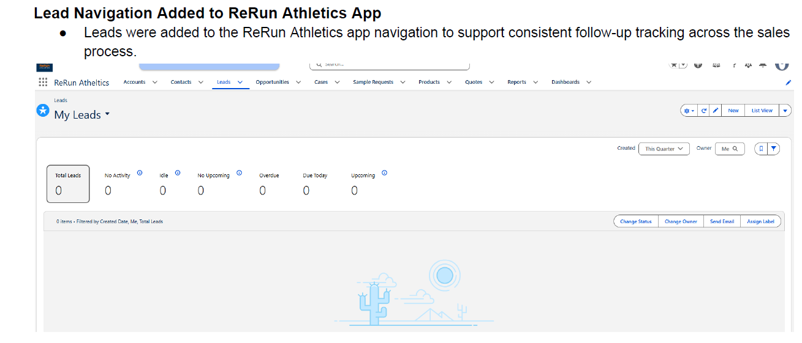
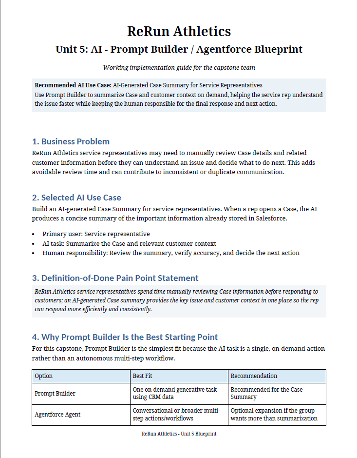
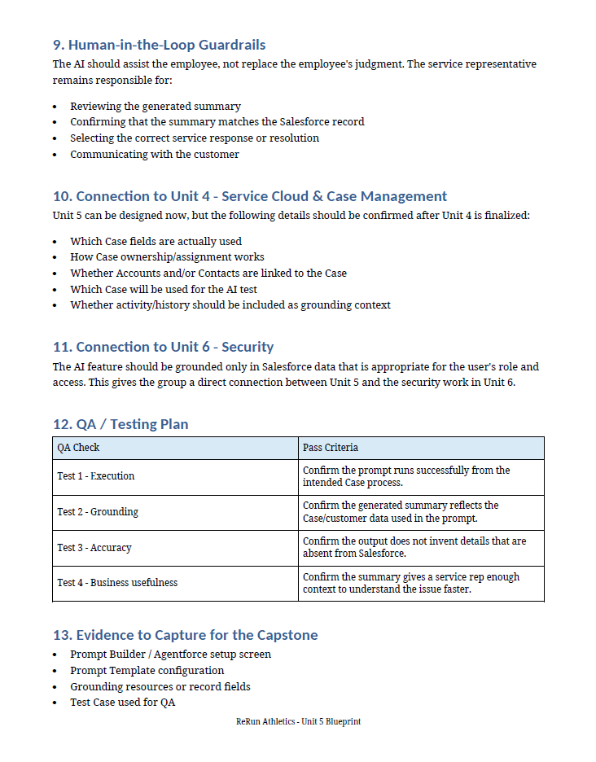
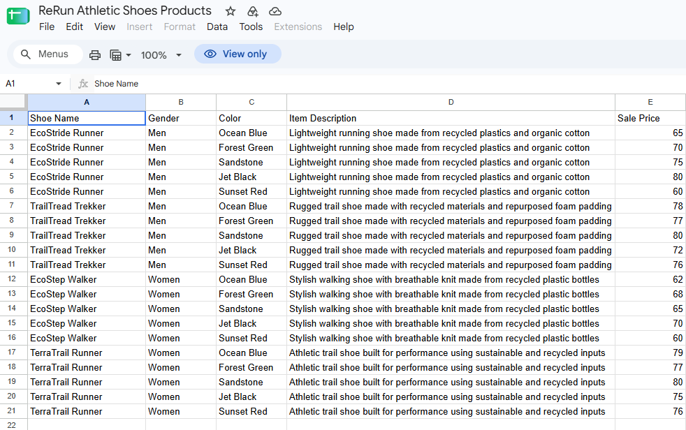
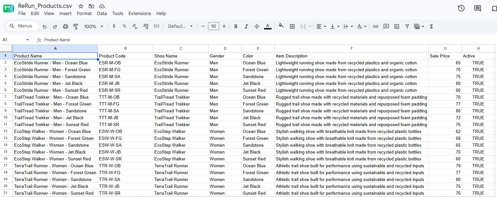

Flow Automation
Built a record-triggered Salesforce Flow to notify Task owners one day before their follow-up tasks were due.
Flow Builder Scheduled Paths TasksSalesforce Administration & Agentforce Program | Per Scholas | 2026
A collaborative Salesforce implementation project focused on improving sales operations, customer service, data quality, and workflow automation.
My Role: Salesforce Consultant & Administrator
ReRun Athletics is a fictional growing athletic footwear company used for a Salesforce capstone. Its existing spreadsheet-based processes presented challenges involving duplicate records, inconsistent customer follow-ups, product data organization, and limited sales visibility.
Our five-member team collaborated to develop a Salesforce Lightning application addressing these operational challenges through configuration, automation, reporting, and customer service workflows.
Built a record-triggered Salesforce Flow to notify Task owners one day before their follow-up tasks were due.
Flow Builder Scheduled Paths TasksDebugged the reminder automation and verified that the scheduled notification was queued for execution ahead of the Task due date.
Flow Debugging QA TestingConfigured history tracking for Opportunity Stage, Close Date, and Amount, along with Account ownership, address, and phone information.
Data Auditing Salesforce SetupUpdated and organized a 20-record product CSV dataset containing eight product attributes to support Salesforce catalog and pricing work. A teammate handled the data import.
CSV Data PreparationDesigned a Salesforce Prompt Builder solution blueprint for summarizing customer service Cases. Documented data grounding, human-review safeguards, and test criteria for another team member to implement.
Prompt Builder Design AI DocumentationDocumented automation configuration, follow-up activity visibility, successful debugging, and Field History Tracking settings with supporting Salesforce screenshots.
Documentation Business RequirementsIn addition to my individual contributions, our team worked together to deliver the following components:
These were collaborative team deliverables, not features independently implemented by me.
My automation documentation records a successful scheduled-path debug and a reminder queued one day before the related Task's due date.
Salesforce configuration screenshots also document Opportunity and Account Field History Tracking settings.
Screenshots from my individual Salesforce administration work during the ReRun Athletics capstone project.

Record-triggered Flow with a scheduled path that notifies Task owners one day before the Task due date.

Verified that the reminder was queued one day before the follow-up Task was due.

Enabled tracking for Stage, Close Date, and Amount to support pipeline auditing.

Enabled tracking for Account Owner, Billing Address, Shipping Address, and Phone.

Upcoming Tasks displayed within the Opportunity record to improve follow-up visibility.

Leads available in the ReRun Athletics Lightning application to support sales activity management.
Independently developed an AI-assisted Case Summary blueprint to guide a teammate's Salesforce Prompt Builder implementation. Documented business requirements, proposed CRM data grounding, human-review safeguards, and QA testing criteria.
My contribution focused on solution design and technical documentation. A teammate handled the Salesforce implementation.

Business problem, selected AI use case, and Prompt Builder recommendation.

Human-review safeguards, Salesforce security considerations, and proposed testing criteria.
Prepared and standardized a 20-record product dataset for the ReRun Athletics Salesforce implementation.
Expanded the original five-column spreadsheet into an eight-column CSV by adding Product Name, Product Code, and Active status fields. A teammate completed the Salesforce import.

Original product spreadsheet with shoe details and pricing.

Standardized product names, codes, and active status fields prepared for the team's Salesforce import.
My Salesforce automation work helped establish a more consistent follow-up process for ReRun Athletics. The record-triggered Flow schedules notifications for assigned Task owners one day before their tasks are due, helping reduce the risk of missed follow-ups and overlooked sales opportunities.
By configuring Field History Tracking on key Opportunity and Account fields, I improved visibility into stage changes, close date updates, ownership changes, and customer information updates. These audit capabilities support more accurate records and better coordination between sales and support teams.
As part of the broader team implementation, Salesforce activities were made accessible from key sales records, allowing representatives to monitor upcoming tasks and next steps. Together, these solutions support more organized sales operations, improved data visibility, and consistent customer follow-up.